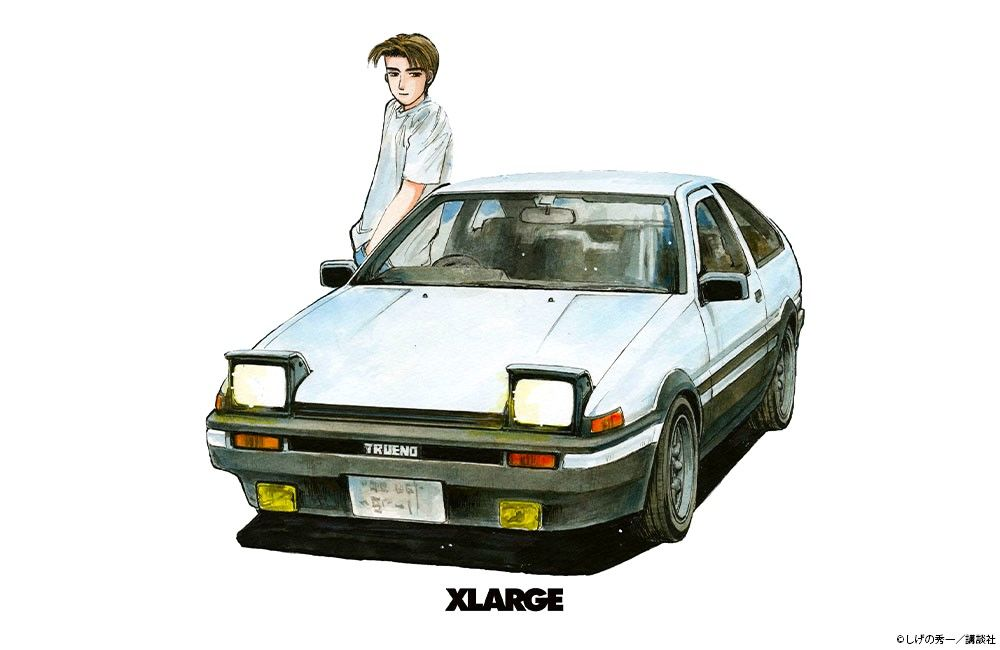
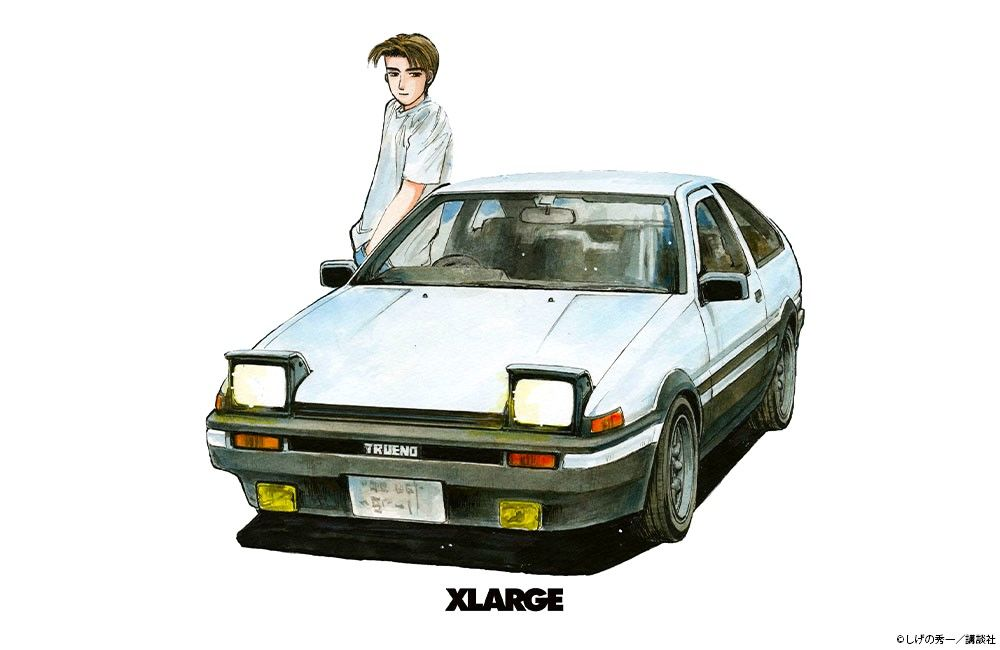

自己紹介
こんにちは！私はponnkotuTVです。自分の教えた知識を身につければすごくポンコツになれます！
趣味
- ドリフト
- 一速でアクセルベタ踏み
- ながら運転 (特に深夜暗い道)
- 温泉
連絡先
ご連絡は以下の方法でどうぞ！
- Email: leon@example.com
- GitHub: https://github.com/leonteraoka
- LinkedIn: https://linkedin.com/in/leonteraoka
フリーランスエンジニア・デザイナー
こんにちは！私はponnkotuTVです。自分の教えた知識を身につければすごくポンコツになれます！
ご連絡は以下の方法でどうぞ！